Getting Started
Follow the instructions to get access to the project source control, install the Intellij IDEA IDE (Integrated Development Environment), and finally import the source code into that environment.
The RTP test framework makes use of the PTG2 test framework, and therefore follows a very similar installation.
Install PTG2
The process for installing Python, third party libraries, the Intellij IDEA IDE, and PTG2 itself is documented on CA Wiki.
Note You can do the steps manually as written on the page or use the installation package link, if you are running windows,that simplifies the process into one installation setup wizard setup.exe file.
Follow these instructions: Installing PTG2 up to the following step:
3. Getting the Source Code of DB2 Tools QA Automation Project to Your Computer
Installing the Java JDK
The RTPJ Project requires a Java JDK to be installed on the local system. Both 1.7 and 1.8 are currently supported, though 1.8 is recommended.
The Java JDK is typically installed under the C:\Program Files\Java or C:\Program Files (x86)\Java directories.
If a JDK is not already present on your machine one can be downloaded from Oracle's website here: http://www.oracle.com/technetwork/java/javase/downloads/index.html.
Once you have found the location of the Java JDK save the path as it will be used in a later step.
Get the RTP project source code
Follow these steps to import the RTP GitHub project into Intellij.
Step 1: Use Intellij to check out from Version Control using GitHub
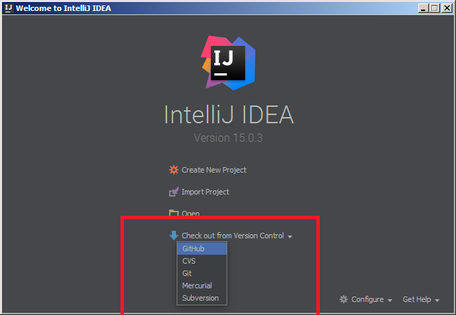
Step 2: Clone the Repository
1.) Enter this Git Repository URL: https://github-isl-01.ca.com/bergr05/RTP.git
2.) Use the Test button to verify that you can access the repository.
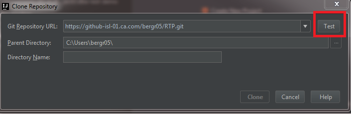
3.) Press the ... button to the right of the Parent Directory line to create a new root directory.
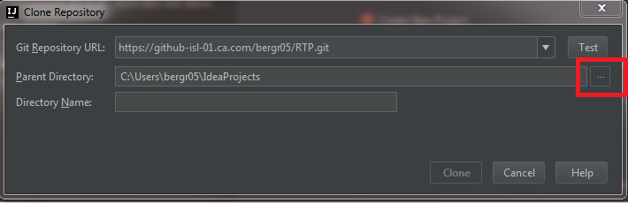
4.) Create a new folder name IdeaProjects.
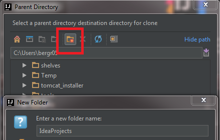
5.) Set the Directory Name to rtp.
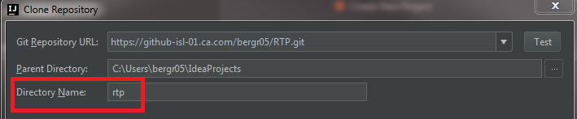
6.) Back on the Clone Repository window click Clone.
Step 3: Configure the Project
1.) Go to File -> Project Structure.
2.) Select Project under Project Settings.
3.) Set the project SDK by clicking on the New... button.
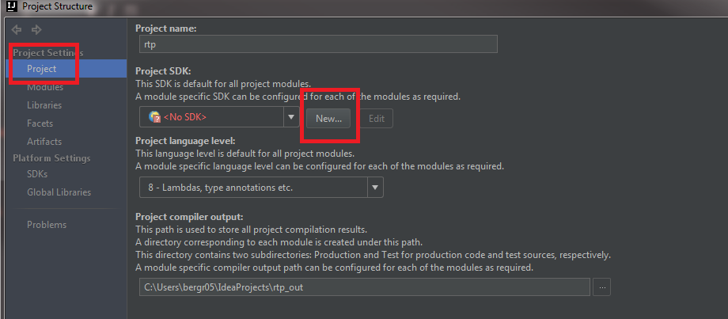 Note: Python may already be set as the project SDK, which for the RTP Python Automation Framework you are done. Click here to go to the documenation for the RTPPY frameworkIf you are trying to setup Intellij for the RTP Java Framework on you local machine then continue to follow the instructions as normal.
4.) Then navigate to the location of the Java SDK i.e.(C:\Program Files\Java\jdk1.8.0_74) and select the JDK.
Then click OK.
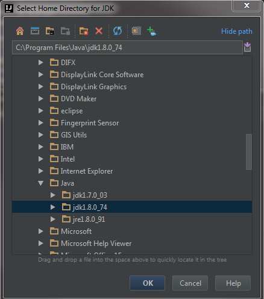
4.) Then set the project compiler path by clicking the ... and navigating to the location of your IdeaProjects folder.
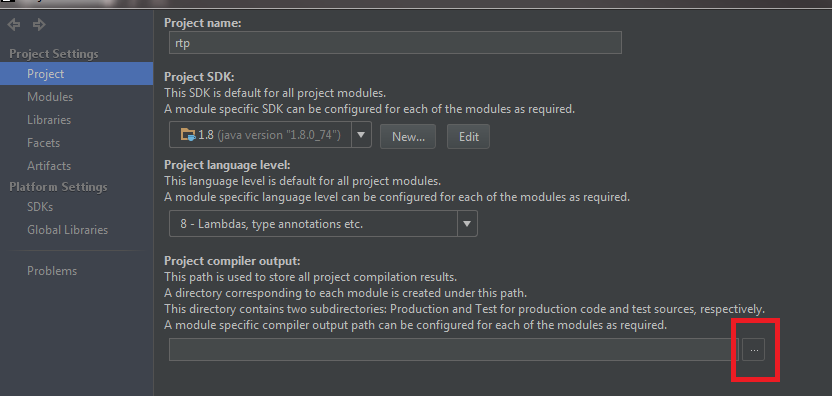
5.) Click the New Folder button to create the compiler output folder.
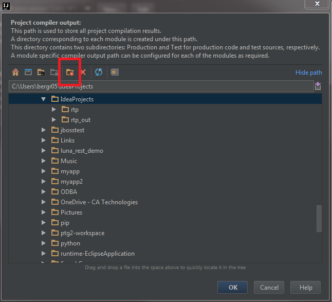
6.) Name the new folder rtp_compiler_output then click OK.
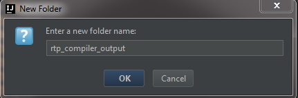
7.) Select Modules under Project Settings.
8.) Select Module RTPJ and click on the Dependencies tab. Then set the SDK to the same Java version as was previously set for the Project.
Then click Apply.
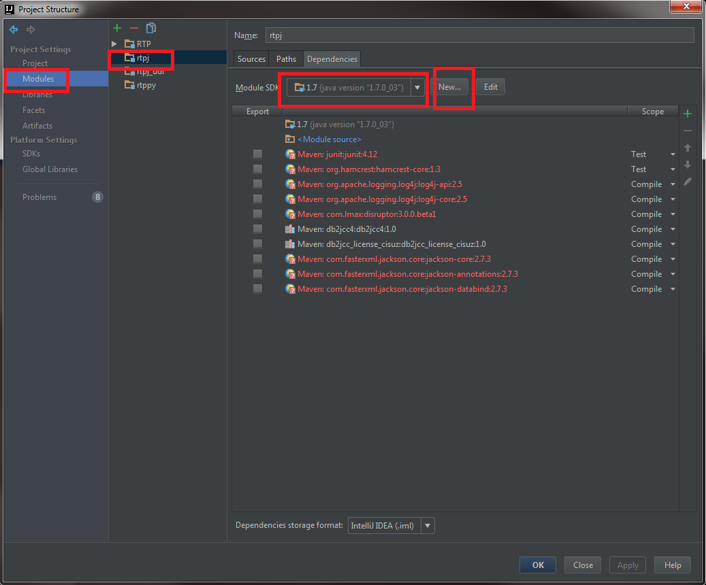
9.) Select Module rtpj_udf and click on the Dependencies tab. Then set the SDK to the same Java version as was previously set for the RTPJ module.
Then click Apply.
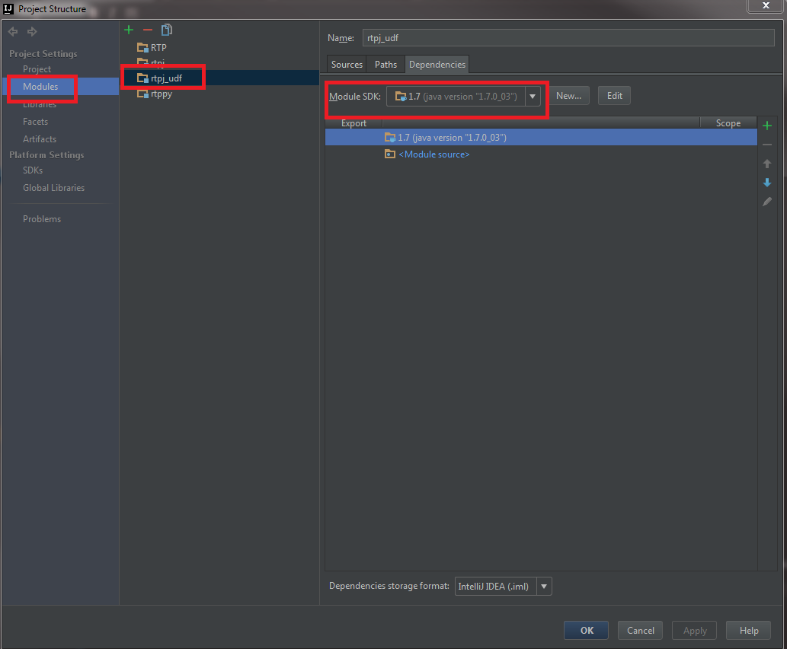
10.) Select Module rtppy and click on the Dependencies tab. Then set the SDK to the location of the local Python.exe file.
If this does not already exist click New and add the SDK to Intellij. Name the added Python SDK as "Python".
Then click Apply.
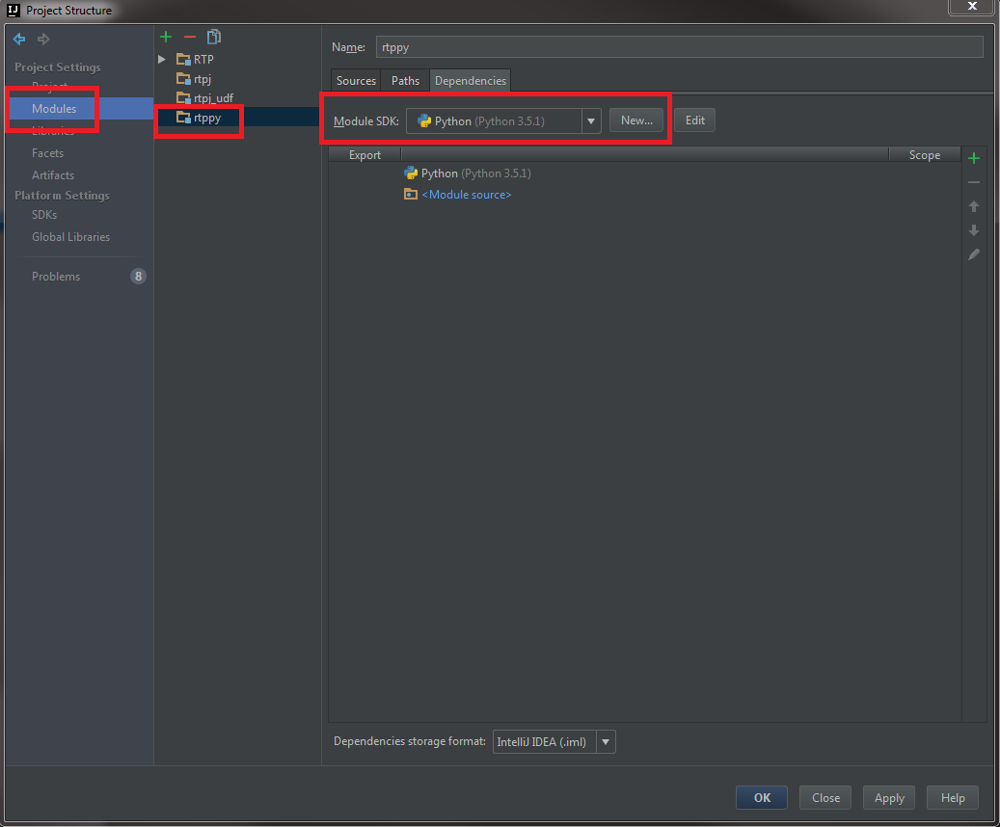
Step 4: Adding Maven Projects
1.) Click View -> Tool Windows -> Maven Projects. This will display the Maven Projects window, usually to the right of the workspace.
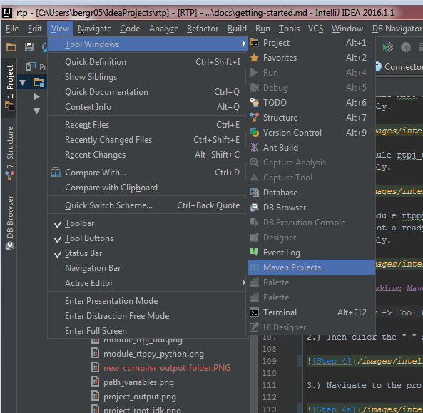
2.) Then click the + symbol to Add Maven Projects.
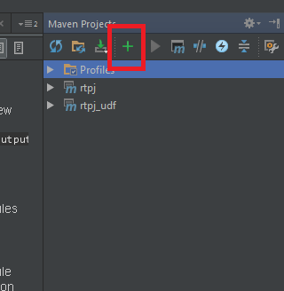
3.) Navigate to the project directory and select both pom.xml files under the rtpj and rtpj_udf directories. Then click OK.
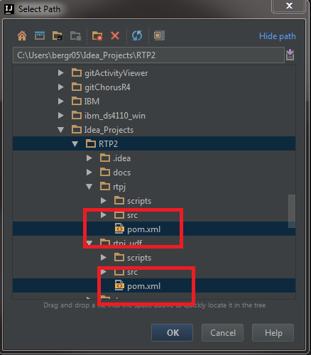
Step 5: Setup RTPJ
1.) Next follow the instructions located here for setting up the RTPJ project.
GitHub Repository Information
This project uses Git as its source code repository.
CA GitHub Enterprise: https://github-isl-01.ca.com
RTP Git Repository website: https://github-isl-01.ca.com/bergr05/RTP
RTP Git Repository: https://github-isl-01.ca.com/bergr05/RTP.git